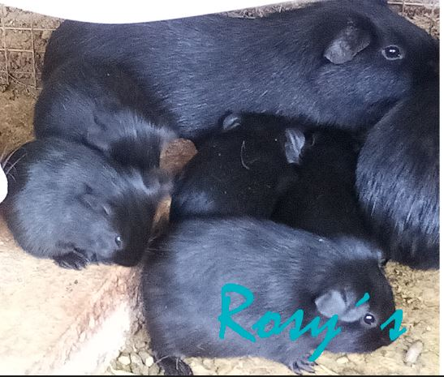

Aquí puede saber, como estamos trabajando para que se decida por el campeón de los Andes!
Nuestros cuyes residen en la provincia de jauja; en un pueblillo alejado de la civilización; están ubicados en lugar especial del cual conseguimos el alimento natural con el cual subsisten. Tenemos personal confiable quienes se encargan de alimentarlos cada día. Pero somos nosotros quienes se encargan brindar el alimento y la atención necesaria para la subsistencia de los mismo.

Los primeros 15 días de vida estos se alimentan de la leche de su madre; en caso ocurra algo con ella; lo mejor es asumir el rol; brindandole leche en polvo de uso veterinario; de otra forma el pequeño fallecerá. El campeón de los andes no es alimentado ni inyectado con hormonas de crecimiento u otras sustancias químicas que algunos suelen hacer.
Nuestros cuyes se valen a base de alfalfa, gammarra, chala seca y fresca de nuestra propia cosecha. Es por ello que tenemos cuyes de calidad, fuertes y resistentes a cualquier enfermedad.
Los cuyes blancos y colorados se encuentran en el puebliello; donde también se encuentran ordenados; por géneros, tamaños. Tenemos posas exclusivas de madres con sus crias, por 15 días para luego ser separados de ellas. En el otro punto donde también residen, se les dan las mismas prioridades; de alimentación y cuidado. Estos se encuentran en jaulas de madera a diferencia de los otros cuyes pues estos residen en posas. En las jaulas tenemos a los cuyes negros y también se les clasifica por el tamaño género, etc. Son clasificados para que la raza no se degenere. Por ello "El campeón de los andes" es su mejor opción
(c) Todos los derechos reservados - Jhojan Yauri 2020
Diseñado por mi